|
目录 1 培训教材
1.1
操作流程
图1用户操作流程图 1.2
用户登录
用户访问管理学院的网站后台登录地址
http://som.nwpu.edu/admin/login.jsp通过用户名密码进行登录进入如下登录界面： 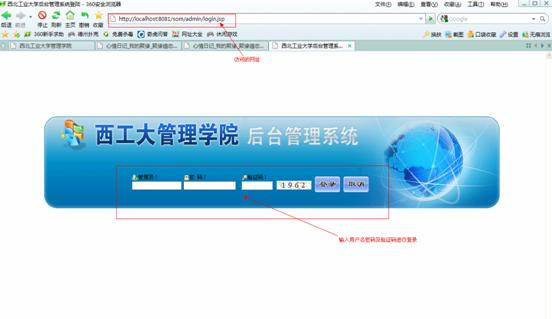 图2-1用户登录界面 用户登录成功进入自己的操作菜单界面，可以看到自己权限内的可操作的菜单，不同的用户将看到不同的菜单。 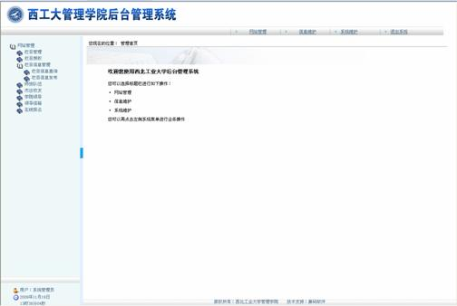 图2-2用户登录成功界面 1.3
栏目信息管理
1.3.1 栏目信息查询
功能：栏目信息查询。 操作： 由左侧网站管理树中点击“栏目信息查询”节点。进入栏目信息查询拦截页面。如图： 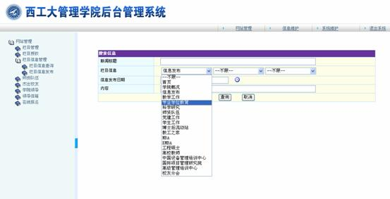 该页面为方便查询到每个栏目下的新闻信息。用户可以选择栏目，进行各个栏目下的信息查询。点击查询可以查询到想要的信息列表。 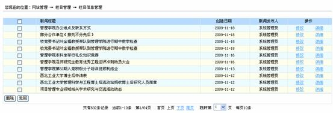 1、删除：勾选栏目信息管理列表左侧复选框，选择好要删除的栏目后，再点击栏目信息管理列表左下角“删除”按钮，系统弹出确认删除提示，再点击确认后，即完成选定栏目信息的删除，并可以多选，并可以进行多条信息同时删除。 2、分页显示： 在信息列表的下方有分页栏目，包括总记录数、当前页数、上页、下页，跳转页数。每页显示条数。 3、详细、修改：点击栏目信息管理列表中某一栏目的操作栏中的“修改”连接，将进入该栏目修改页面。如图 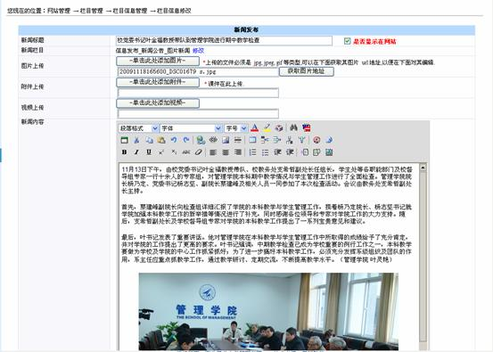 可以修改文本域中一切可以修改的东西。 修改上传的图片注意安装以下步骤： 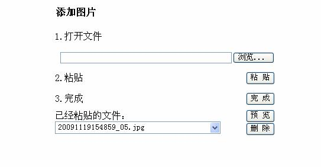 对上传的图片先进行删除、然后再进行添加操作，操作完毕后点击【完成】按钮然后回到主界面，点击【修改】整个操作过程完成。同样附件和视频修改步骤一样。 点击详细将进入“详细”链接将进入详细页面。可以查看信息的详细。 1.3.2 栏目信息发布
功能：栏目信息发布。 描述：栏目信息发布主要功能是对网站中各个栏目信息进行发布，不同用户拥有不同的栏目权限。 点击栏目信息发布菜单，进入信息发布页面如下图所示： 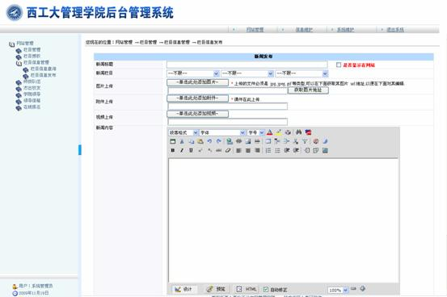 填写发布信息内容： Ø 新闻标题；填写要发布的新闻标题。 Ø 是否显示在网站，当打钩之后就在首页显示，不打钩不在首页显示该信息，只在二级栏目显示该信息。 Ø 图片上传，可以上传图片操作如下： 1、点击【浏览】选择本地要上传的图片，然后点击【粘贴】按钮文件会出现在已经粘贴文件的文本下拉框中。点击【完成】即完成了对文件的上传。如下图 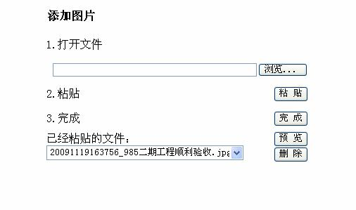 2、完成后回到新闻发布的主页面，点击获取图片地址获取图片地址页面。 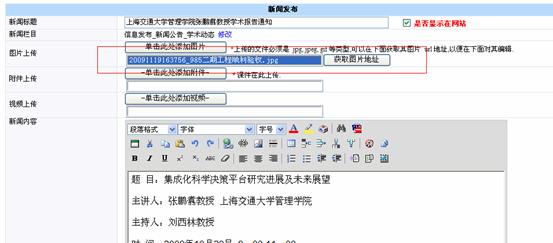 3、点击“复制图片地址”按钮复制图片地址关闭窗口 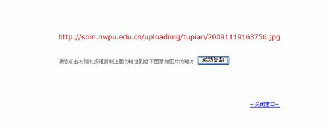 4、回到信息发布主窗口，点击插入图片图标，弹出插入图片窗口如下图所示， 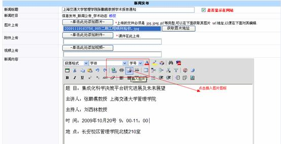 5、在插入图片窗口中将在第3步中复制的图片地址粘贴在图片地址处，会在右边出现插入图片预览，并可以在页面图片属性中调整图片大小。点击确定图片将插入到新闻信息文本框中。 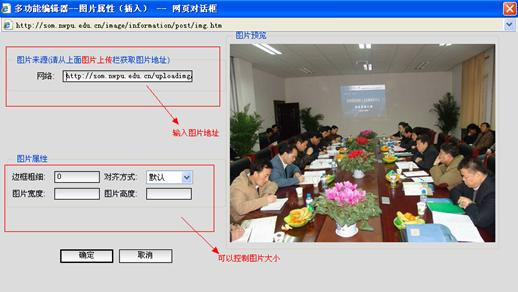 6、插入图片用户可以像WORD一样调整图片在页面中的位置调整完后点击提交按钮新闻发布成功。 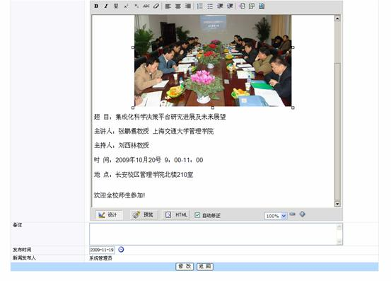 Ø 附件上传 点击附件上传按钮，弹出附件上传框，操作与上传图片一样，可以上传word，xls，等多种格式的文件。之后点击完成按钮即完成附件的上传。 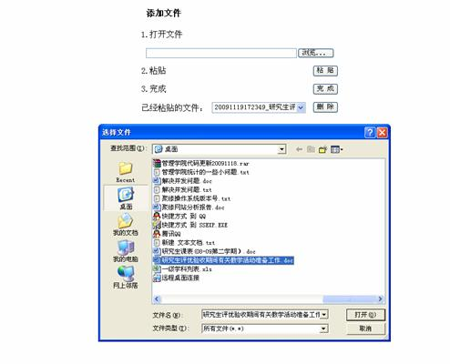 Ø 视频上传也一样， 视频文件课以上传各种视频文件avi，rm，wmv等格式的视频文件。 Ø 新闻内容 填写你要发布的新闻内容 如下图所示将信息填写完整后点击提交按钮即完成信息发布。 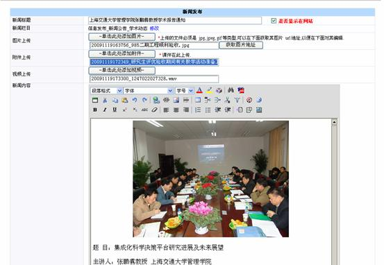 新发布的信息将首页对应的栏目中显示。点击可以查看详细。 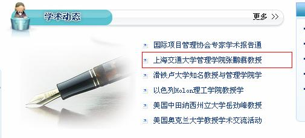 新闻的详细页面可以看到发布整条新闻信息的详细，包括标题、信息内容、图片、视频、附件等。如下图
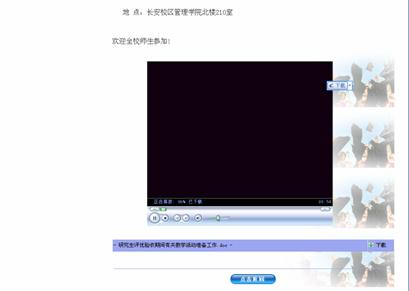 1.4
师资队伍
功能：管理网站师资队伍信息。 操作： 由左侧网站管理树中点击“师资队伍”节点。进入师资队伍管理列表页面。如图： 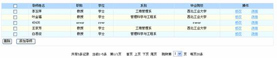 该管现页面详细功能有导师的添加、删除、修改、详细查看。 １）、添加。点击师资队伍管理列表左下角“添加导师”按钮，进行导师添加页面。如图： 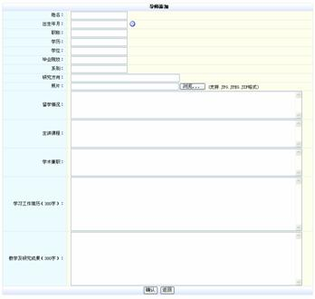 填写表单后，点击“确认”，即提交数据完成导师的添加。 ２）、删除。勾选师资队伍管理列表左侧复选框，选择好要删除的导师后，再点击点击师资队伍管理列表左下角“删除”按钮，系统弹出确认删除提示，再点击确认后，即完导师的删除！ ３）、修改。点击师资队伍管理列表中某一导师对应操作栏中的“修改”连接，将进入该导师修改页面。如图： 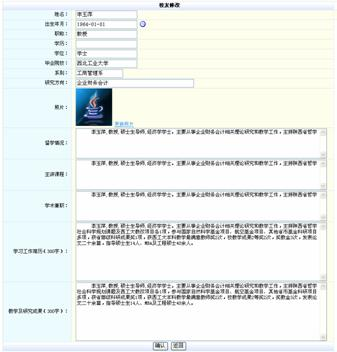 该导师相应数据项已经读入，修改完相关数据后，点击“确认”，即提交数据完成导师信息的修改。 ４）、详细查看。点击师资队伍管理列表中某一导师的操作栏中的“详细”连接，将进入该导师详细查看页面。如图： 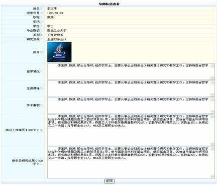 点击“返回”，即返回师资队伍管理列表页面。 1.5
杰出校友
功能：管理网站上的杰出校友信息。 操作： 由左侧网站管理树中点击“杰出校友”节点。进入杰出校友管理列表页面。如图： 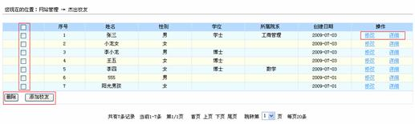 该管现页面详细功能有杰出校友的添加、删除、修改、详细查看。 １）、添加。点击杰出校友管理列表左下角“添加校友”按钮，进行杰出校友添加页面。如图： 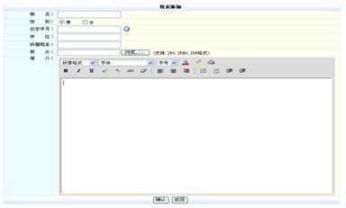 填写表单后，点击“确认”，即提交数据完成杰出校友的添加。 ２）、删除。勾选杰出校友管理列表左侧复选框，选择好要删除的杰出校友后，再点击点击杰出校友管理列表左下角“删除”按钮，系统弹出确认删除提示，再点击确认后，即完成杰出校友的删除！ ３）、修改。点击杰出校友管理列表中某一杰出校友对应操作栏中的“修改”连接，将进入该杰出校友修改页面。如图： 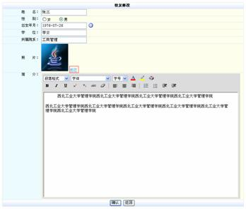 该校友原相应数据项已经读入，修改完相关数据后，点击“确认”，即提交数据完成杰出校友的修改。 ４）、详细查看。点击杰出校友管理列表中某一杰出校友的操作栏中的“详细”连接，将进入该杰出校友详细查看页面。如图： 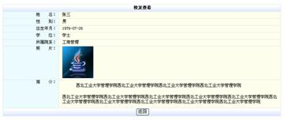 点击“返回”，即返回杰出校友管理列表页面。 1.6
在线报名
功能：在线报名管理员可以对在线报名的信息进行管理如下图所示： 管理员进入系统，点击在线报名可以看到报名的人的列表。
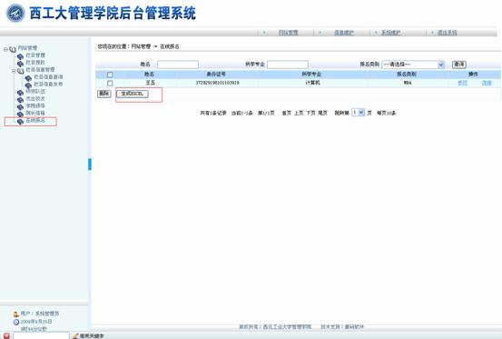 并可以将报名人的名单导出成为excle 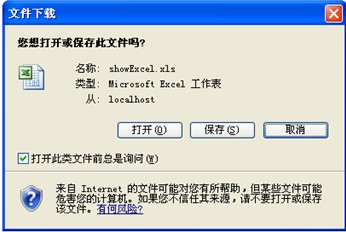 点击修改可以对报名人员的资料进行修改。如下图： 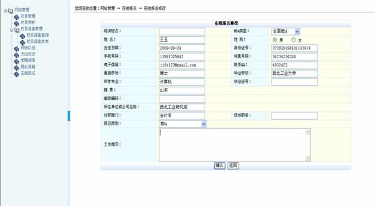 点击详细 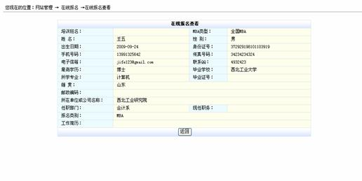 学生的前台报名页面。
|